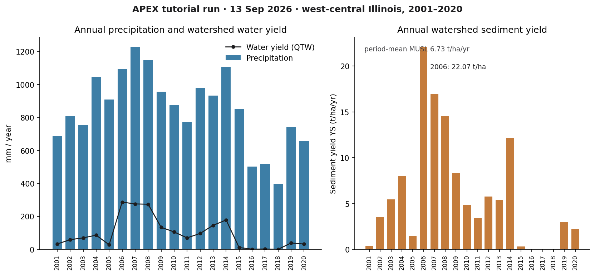
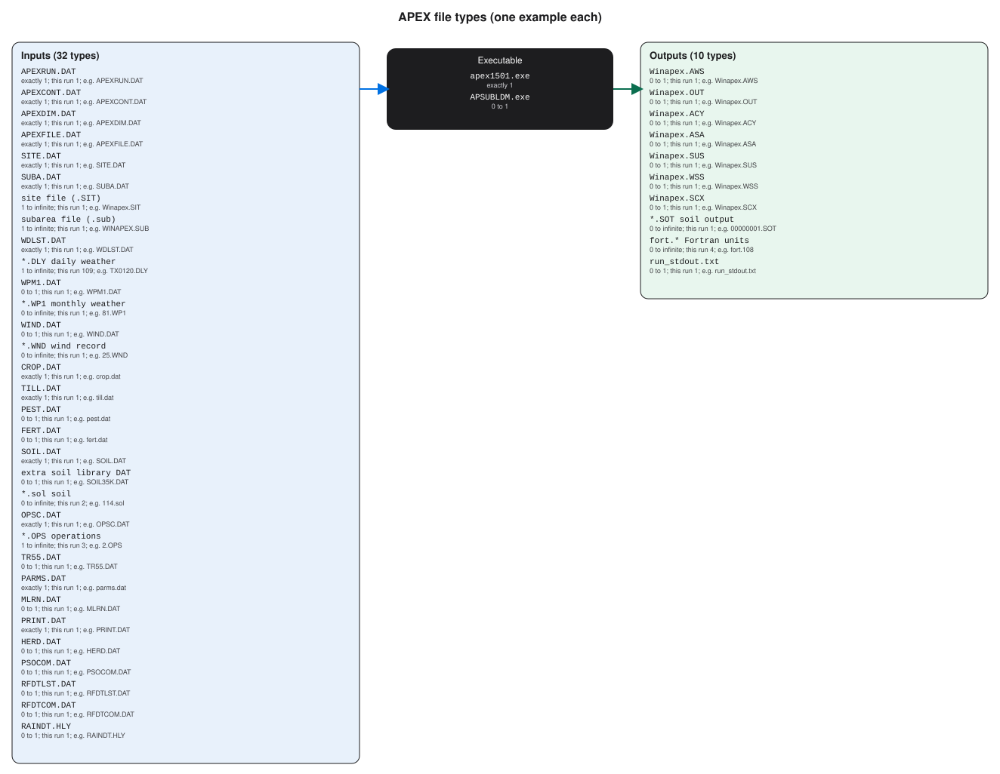

APEX
A first successful run of the Agricultural Policy/Environmental eXtender on Windows. You download APEX1501 from Texas A&M AgriLife, copy the lab’s program-folder inputs into a fresh directory, run apex1501.exe, and read the annual watershed sediment file. The WinAPEX GUI is installed; this path uses the command-line engine.
1. What this model does
APEX extends the field-scale EPIC model to a farm or small watershed. The landscape is cut into subareas. Each subarea has its own soil, slope, weather, and operations file. Water, sediment, nutrients, and pesticides move from those fields into channels and then to an outlet. The daily timestep also grows crops, applies fertilizer, and can run several erosion equations at once (USLE, MUSLE family, RUSLE, RUSLE2). You will open the annual watershed table first.
The lab’s pinned engine is apex1501.exe (APEX1501) from the WinAPEX 1501 program folder. For this example the driving erosion equation is MUST (theoretical MUSLE).
2. Get the software
Download APEX from the Texas A&M AgriLife EPIC/APEX software page. The Windows pieces you want are the APEX1501 executable and WinAPEX for APEX v.1501 (October 2016). Blackland Research and Extension Center in Temple, Texas, maintains the site. APEX-CUTE and QAPEX are later editors; you do not need them to finish this tutorial.
On this host the extracted tree is already at C:\Grok\Models\installs\APEX (installer archive\downloads\winapex_setup.exe). If you are repeating the lab path, you can skip the download and use that folder.
3. The lab install
WinAPEX drops a GUI and a program folder. Only the program folder is required here.
| Piece | Where | First-run role |
|---|---|---|
apex1501.exe |
WinApex\apexprog\ |
The APEX1501 engine. Copy it into a working folder that already holds the .DAT files, then run it there. |
| Run control | APEXRUN.DAT, APEXCONT.DAT, APEXFILE.DAT |
Run name, number of years (20, starting 2001), and the map of soil, weather, crop, and print files. |
| Site and subarea | SITE.DAT → WINAPEX.SIT; SUBA.DAT → Winapex.sub |
west_il at 40.32 N, 91.33 W; 0.09 ha, 30 m slope length, 3% slope; soil 114; operations 2 (barley, dryland, no-till). |
| Daily weather | WDLST.DAT plus TX*.DLY |
Station list and daily files. The west-Illinois CLIGEN series is the one this example actually uses. |
WinAPEX.exe |
WinApex\ |
The Windows GUI. Useful later. Not used for the verified run. |
installs\APEX\golden holds a prior CLI tree. The verification below used a new working copy of the current apexprog inputs, so that golden tree stays untouched.
4. Novice path: run the west-Illinois hillslope
The example is a twenty-year continuous run (2001–2020) on a 30 m, 3% hillslope in west-central Illinois. Soil 114 is a fine sandy loam. Operations file 2 is barley, dryland, no-till. Mean precipitation in the output is 848.3 mm per year. You will copy the program-folder inputs into a fresh directory, drop the executable beside them, and run from that folder.
$src = "C:\Grok\Models\installs\APEX\WinApex\apexprog"
$run = "C:\Grok\Models\installs\APEX\tutorial_run_20260913"
New-Item -ItemType Directory -Force -Path $run | Out-Null
Get-ChildItem $src -File | Where-Object {
$_.Extension -notin ".OUT",".ASA",".ACY",".AWS",".SUS",".WSS",".STR",".SCX",".MDB",".SOT",".LOG"
} | Copy-Item -Destination $run
Set-Location $run
.\apex1501.exe
On this host you can instead rerun the lab wrapper, which copies those inputs, executes the engine, asserts the numbers below, and rewrites the figure:
python C:\Grok\Models\tools\run_apex_tutorial_verify.py
Stand in the folder that contains APEXRUN.DAT. The engine does not take a project path on the command line. If you run it from a tools directory, it will not see the west-Illinois inputs.
5. Confirm the run
The process should exit 0 and write Winapex.OUT, Winapex.AWS, Winapex.ASA, and Winapex.SUS beside the executable. Open the annual watershed file first; each row is one year.
| Check | Where | This verification (13 Sep 2026) |
|---|---|---|
| Exit code | apex1501.exe |
0 |
Years in Winapex.AWS |
Winapex.AWS |
2001–2020 (20 rows) |
| 2001 sediment yield YS | Winapex.AWS |
0.39 t/ha |
| 2001 water yield QTW | Winapex.AWS |
32.21 mm |
| 2006 sediment yield YS | Winapex.AWS |
22.07 t/ha (wet year; 1,095 mm rain) |
| Period-mean MUST | Winapex.SUS SA# 1 |
5.89 t/ha/yr |
| Period-mean MUSL | Winapex.SUS SA# 1 |
6.73 t/ha/yr |
| Mean precipitation / water yield | Winapex.AWS |
848.3 mm/yr rain; 96.16 mm/yr QTW |
The automated test is test_tutorial_run inside tools\run_apex_tutorial_verify.py. It requires twenty AWS years, 2001 YS equal to 0.39 t/ha within 0.05, 2001 QTW equal to 32.21 mm within 0.05, 2006 YS equal to 22.07 t/ha within 0.05, and a positive SUS MUSL and MUST. That is a numeric check on a new working copy rather than the golden tree. The older tools\test_all_models.ps1 APEX block still runs in place under apexprog; use the wrapper above when you want a disposable folder.
6. This verification’s figure
The 13 Sep 2026 run wrote twenty annual rows. 2006 is the sediment peak at 22.07 t/ha; several later dry years drop YS to zero. Period-mean MUST is 5.89 t/ha/yr, which matches mean AWS YS (5.90 t/ha/yr) because MUST is the driving equation. Mean precipitation is 848.3 mm/yr; mean water yield is 96.16 mm/yr.

installs\APEX\tutorial_run_20260913. Left: annual precipitation with water yield (QTW) overlaid. Right: annual sediment yield YS, with the 2006 peak labeled.If you rerun the wrapper, this PNG is rewritten in the run folder and in each tutorial images\ home.
Model Input and Output
Same-type files that only change location or ID are shown once. The count under each name is how few and how many of that type a run can hold. The example name is one file from the verification folder.

Executable
apex1501.exe
How many: exactly 1. This run: 1. Example: apex1501.exe.
This is the APEX1501 engine. Start one copy in a folder that already holds APEXRUN.DAT and the tables APEXFILE.DAT names. Open the example file in the verification folder to see that layout on disk.
APSUBLDM.exe
How many: 0 to 1. This run: 1. Example: APSUBLDM.exe.
This is a companion builder for subarea loads. The first-success path does not start it. At most one copy sits beside apex1501.exe. Open the example file in the verification folder to see that layout on disk.
Input files
APEXRUN.DAT
How many: exactly 1. This run: 1. Example: APEXRUN.DAT.
This names the run, how many years to simulate, and which weather and wind stations to use. One run file. APEX1501 reads it first. Open the example file in the verification folder to see that layout on disk.
APEXCONT.DAT
How many: exactly 1. This run: 1. Example: APEXCONT.DAT.
This is the control card: start year, number of years, and process switches including the erosion equation. One control file. Open the example file in the verification folder to see that layout on disk.
APEXDIM.DAT
How many: exactly 1. This run: 1. Example: APEXDIM.DAT.
This sets array dimensions the engine was compiled to expect. One dimension file. Do not edit it on a first run. Open the example file in the verification folder to see that layout on disk.
APEXFILE.DAT
How many: exactly 1. This run: 1. Example: APEXFILE.DAT.
This maps each table role (soils, crops, weather list) to one DAT file name. One map file for the whole run. Open the example file in the verification folder to see that layout on disk.
SITE.DAT
How many: exactly 1. This run: 1. Example: SITE.DAT.
This lists site files the run may use. Usually one row points at WINAPEX.SIT. Extra sites would be extra rows, not extra SITE.DAT files. Open the example file in the verification folder to see that layout on disk.
SUBA.DAT
How many: exactly 1. This run: 1. Example: SUBA.DAT.
This points at the subarea file. One pointer file. Many fields are rows inside Winapex.sub, not extra SUBA.DAT files. Open the example file in the verification folder to see that layout on disk.
site file (.SIT)
How many: 1 to infinite. This run: 1. Example: Winapex.SIT.
This is a site record: location, elevation, and climate assignment. One file per site. Most tutorial runs use a single site. Open the example file in the verification folder to see that layout on disk.
subarea file (.sub)
How many: 1 to infinite. This run: 1. Example: WINAPEX.SUB.
This is the field map: area, slope, soil, and operations for each subarea. One file can hold many fields as rows. More files if you split projects.
WDLST.DAT
How many: exactly 1. This run: 1. Example: WDLST.DAT.
This is the daily-weather station list. Each row names a .DLY file. One list file; the number of stations is the number of .DLY files.
*.DLY daily weather
How many: 1 to infinite. This run: 109. Example: TX0120.DLY.
This is one daily weather station: rainfall and temperature by day. You need at least one. The library can hold as many stations as WDLST lists.
WPM1.DAT
How many: 0 to 1. This run: 1. Example: WPM1.DAT.
This lists monthly weather-parameter files. One list. The .WP1 files it names are the per-station monthly statistics. Open the example file in the verification folder to see that layout on disk.
*.WP1 monthly weather
How many: 0 to infinite. This run: 1. Example: 81.WP1.
This is monthly weather statistics for one station. Zero if unused. One file per station that needs monthly parameters. Open the example file in the verification folder to see that layout on disk.
WIND.DAT
How many: 0 to 1. This run: 1. Example: WIND.DAT.
This is the wind station list. One list file. APEXRUN.DAT selects which wind record the run uses. Open the example file in the verification folder to see that layout on disk.
*.WND wind record
How many: 0 to infinite. This run: 1. Example: 25.WND.
This is a wind record for one station. Wind affects evapotranspiration and some erosion terms. One file per wind station. Open the example file in the verification folder to see that layout on disk.
CROP.DAT
How many: exactly 1. This run: 1. Example: crop.dat.
This is the crop catalog. Every crop ID operations can plant is defined here. One catalog, many crops as rows. Open the example file in the verification folder to see that layout on disk.
TILL.DAT
How many: exactly 1. This run: 1. Example: till.dat.
This is the tillage catalog. Operations files look up mixing depth and residue effects here. One tillage table. Open the example file in the verification folder to see that layout on disk.
PEST.DAT
How many: 0 to 1. This run: 1. Example: pest.dat.
This is the pesticide catalog. One file. Even if nothing is applied, APEX still opens the table when APEXFILE names it. Open the example file in the verification folder to see that layout on disk.
FERT.DAT
How many: 0 to 1. This run: 1. Example: fert.dat.
This is the fertilizer catalog: nutrient content of each product named in operations. One fertilizer table. Open the example file in the verification folder to see that layout on disk.
SOIL.DAT
How many: exactly 1. This run: 1. Example: SOIL.DAT.
This is the soil catalog the subarea file indexes. Many soils are records inside this one file. Open the example file in the verification folder to see that layout on disk.
extra soil library DAT
How many: 0 to 1. This run: 1. Example: SOIL35K.DAT.
This is a large extra soil library shipped with WinAPEX. Optional. At most one such extra catalog sits in the folder. Open the example file in the verification folder to see that layout on disk.
*.sol soil
How many: 0 to infinite. This run: 2. Example: 114.sol.
This is one soil in compact .sol layout. Optional extras beside SOIL.DAT. One file per extra soil you keep in the folder. Open the example file in the verification folder to see that layout on disk.
OPSC.DAT
How many: exactly 1. This run: 1. Example: OPSC.DAT.
This is the operations-schedule catalog. One catalog file. Field calendars in .OPS files draw from this system. Open the example file in the verification folder to see that layout on disk.
*.OPS operations
How many: 1 to infinite. This run: 3. Example: 2.OPS.
This is one operations calendar: planting, tillage, harvest. Each unique rotation is its own .OPS file. Subareas point at the one they use. Open the example file in the verification folder to see that layout on disk.
TR55.DAT
How many: 0 to 1. This run: 1. Example: TR55.DAT.
This holds TR-55 style runoff parameters when that runoff option is on. One file. Open the example file in the verification folder to see that layout on disk.
PARMS.DAT
How many: exactly 1. This run: 1. Example: parms.dat.
This is coefficients that are not crop- or soil-specific. One parameter file. Leave it as shipped for the first run. Open the example file in the verification folder to see that layout on disk.
MLRN.DAT
How many: 0 to 1. This run: 1. Example: MLRN.DAT.
This is a short miscellaneous record file named in APEXFILE.DAT. One file, often tiny. Open the example file in the verification folder to see that layout on disk.
PRINT.DAT
How many: exactly 1. This run: 1. Example: PRINT.DAT.
This chooses which output tables APEX writes. One print file. Annual AWS numbers exist because this file asked for them. Open the example file in the verification folder to see that layout on disk.
HERD.DAT
How many: 0 to 1. This run: 1. Example: HERD.DAT.
This is livestock herd data. One file. A small file means little or no grazing in the example. Open the example file in the verification folder to see that layout on disk.
PSOCOM.DAT
How many: 0 to 1. This run: 1. Example: PSOCOM.DAT.
This is a reserved communication file. It can be empty. One path, still named in APEXFILE.DAT. Open the example file in the verification folder to see that layout on disk.
RFDTLST.DAT
How many: 0 to 1. This run: 1. Example: RFDTLST.DAT.
This lists optional rainfall-data files. One list. Daily rainfall for this run still comes from the selected .DLY station. Open the example file in the verification folder to see that layout on disk.
RFDTCOM.DAT
How many: 0 to 1. This run: 1. Example: RFDTCOM.DAT.
This is a rainfall-data communication stub. One tiny file. It is not the daily weather series. Open the example file in the verification folder to see that layout on disk.
RAINDT.HLY
How many: 0 to 1. This run: 1. Example: RAINDT.HLY.
This is hourly rainfall WinAPEX can store. Optional. The verified path uses daily .DLY climate, not this hourly file. Open the example file in the verification folder to see that layout on disk.
Output files
Winapex.AWS
How many: 0 to 1. This run: 1. Example: Winapex.AWS.
This is the annual watershed table: precipitation, water yield, and sediment yield YS by year. One AWS file. The test reads YS here. Open the example file in the verification folder to see that layout on disk.
Winapex.OUT
How many: 0 to 1. This run: 1. Example: Winapex.OUT.
This is the large text listing of the whole run. One OUT file. Search it when a value is not in the short annual tables.
Winapex.ACY
How many: 0 to 1. This run: 1. Example: Winapex.ACY.
This is annual crop yield. One ACY file when print options request it. It is not the sediment check. Open the example file in the verification folder to see that layout on disk.
Winapex.ASA
How many: 0 to 1. This run: 1. Example: Winapex.ASA.
This is annual subarea output, a yearly field summary. One ASA file. Watershed sediment for the tutorial is in AWS. Open the example file in the verification folder to see that layout on disk.
Winapex.SUS
How many: 0 to 1. This run: 1. Example: Winapex.SUS.
This is a shorter summary than OUT. One SUS file. Confirm YS in AWS first. Open the example file in the verification folder to see that layout on disk.
Winapex.WSS
How many: 0 to 1. This run: 1. Example: Winapex.WSS.
This is watershed summary output that complements AWS. One WSS file. Open the example file in the verification folder to see that layout on disk.
Winapex.SCX
How many: 0 to 1. This run: 1. Example: Winapex.SCX.
This is extra annual or scenario text beside AWS. One SCX file when print options include it. Open the example file in the verification folder to see that layout on disk.
*.SOT soil output
How many: 0 to infinite. This run: 1. Example: 00000001.SOT.
This is soil-output for one subarea. Zero if not printed. One .SOT file can appear per subarea APEX is asked to write. Open the example file in the verification folder to see that layout on disk.
fort.* Fortran units
How many: 0 to infinite. This run: 4. Example: fort.108.
These are internal Fortran unit files APEX opens during the run. Count grows with units the engine uses. Not annual sediment tables. Open the example file in the verification folder to see that layout on disk.
run_stdout.txt
How many: 0 to 1. This run: 1. Example: run_stdout.txt.
This is console text captured from apex1501.exe. One capture. APEX often prints little; success is the AWS file. Open the example file in the verification folder to see that layout on disk.
7. After the first success
Once the engine has written those tables, you can open Winapex.ACY for barley yield and stress, or PRINT.DAT to change which variables are stored. Changing slope length or operations is an edit to Winapex.sub and OPSC.DAT; that is a different lesson. This one stops at a verified CLI run of APEX1501.